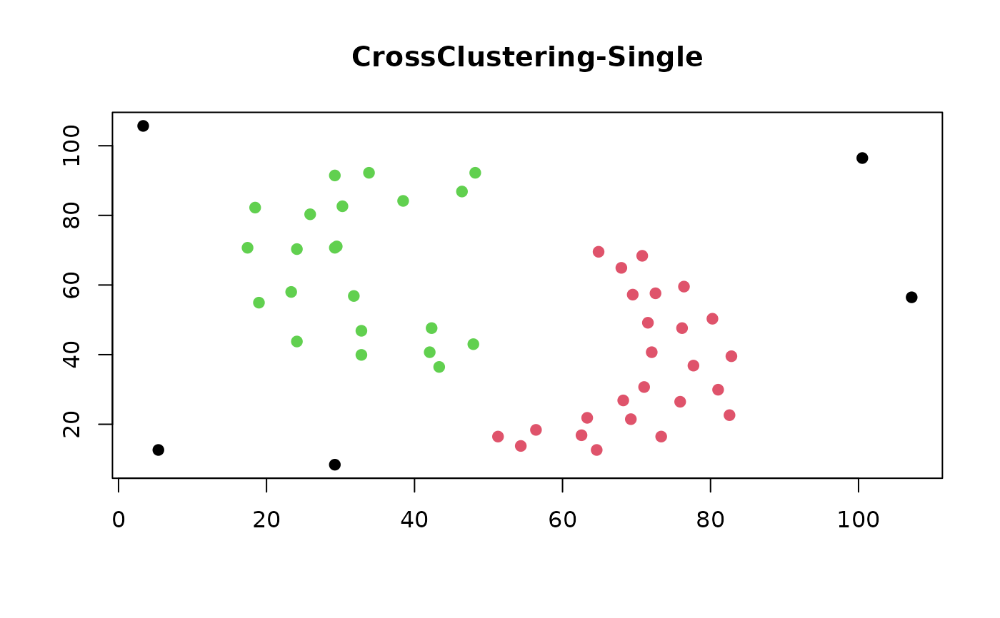

R/cc_crossclustering.R
cc_crossclustering.RdThis function performs the CrossClustering algorithm. This method combines the Ward's minimum variance and Complete-linkage (default, useful for finding spherical clusters) or Single-linkage (useful for finding elongated clusters) algorithms, providing automatic estimation of a suitable number of clusters and identification of outlier elements.
A dissimilarity structure as produced by the function
dist
(int) Minimum number of clusters for the Ward's minimum variance method. By default is set equal 2
(int) Maximum number of clusters for the Ward's minimum variance method (see details)
(int) Maximum number of clusters for the Complete/Single-linkage method. It can not be equal or greater than the number of elements to cluster (see details)
(lgl) If TRUE (default) outliers must be searched
(see details)
(chr) "complete" (default) or "single". CrossClustering combines Ward's algorithm with Complete-linkage if method is set to "complete", otherwise (if method is set to 'single') Single-linkage will be used.
an object used to select a method.
further arguments passed to or from other methods.
A list of objects describing characteristics of the partitioning as follows:
number of clusters
a list of clusters; each element of this lists contains the indices of the elements belonging to the cluster
the average silhouette width over all the clusters
total number of input elements
number of input elements that have actually been clustered
See cited document for more details.
print(crossclustering):
Tellaroli P, Bazzi M., Donato M., Brazzale A. R., Draghici S. (2016). Cross-Clustering: A Partial Clustering Algorithm with Automatic Estimation of the Number of Clusters. PLoS ONE 11(3): e0152333. doi:10.1371/journal.pone.0152333
#' Tellaroli P, Bazzi M., Donato M., Brazzale A. R., Draghici S. (2017). E1829: Cross-Clustering: A Partial Clustering Algorithm with Automatic Estimation of the Number of Clusters. CMStatistics 2017, London 16-18 December, Book of Abstracts (ISBN 978-9963-2227-4-2)
library(CrossClustering)
#### Example of Cross-Clustering as in reference paper
#### method = "complete"
data(toy)
### toy is transposed as we want to cluster samples (columns of the
### original matrix)
toy_dist <- t(toy) |>
dist(method = "euclidean")
### Run CrossClustering
cc_crossclustering(
toy_dist,
k_w_min = 2,
k_w_max = 5,
k2_max = 6,
out = TRUE
)
#>
#> CrossClustering with method complete.
#>
#> Parameter used:
#> - Interval for the number of cluster of Ward's algorithm: [2, 5].
#> - Interval for the number of cluster of the complete algorithm: [2, 6].
#> - Outliers are considered.
#>
#> Number of clusters found: 3.
#> Leading to an avarage silhouette width of: 0.8405.
#>
#> A total of 6 elements clustered out of 7 elements considered.
#### Simulated data as in reference paper
#### method = "complete"
set.seed(10)
sg <- c(500, 250, 700, 300, 100)
# 5 clusters
t <- matrix(0, nrow = 5, ncol = 5)
t[1, ] <- rep(6, 5)
t[2, ] <- c( 0, 5, 12, 13, 15)
t[3, ] <- c(15, 11, 9, 5, 0)
t[4, ] <- c( 6, 12, 15, 10, 5)
t[5, ] <- c(12, 17, 3, 7, 10)
t_mat <- NULL
for (i in seq_len(nrow(t))) {
t_mat <- rbind(
t_mat,
matrix(rep(t[i, ], sg[i]), nrow = sg[i], byrow = TRUE)
)
}
data_15 <- matrix(NA, nrow = 2000, ncol = 5)
data_15[1:1850, ] <- matrix(
abs(rnorm(sum(sg) * 5, sd = 1.5)),
nrow = sum(sg),
ncol = 5
) + t_mat
set.seed(100) # simulate outliers
data_15[1851:2000, ] <- matrix(
runif(n = 150 * 5, min = 0, max = max(data_15, na.rm = TRUE)),
nrow = 150,
ncol = 5
)
### Run CrossClustering
cc_crossclustering(
dist(data_15),
k_w_min = 2,
k_w_max = 19,
k2_max = 20,
out = TRUE
)
#>
#> CrossClustering with method complete.
#>
#> Parameter used:
#> - Interval for the number of cluster of Ward's algorithm: [2, 19].
#> - Interval for the number of cluster of the complete algorithm: [2, 20].
#> - Outliers are considered.
#>
#> Number of clusters found: 10.
#> Leading to an avarage silhouette width of: 0.7064.
#>
#> A total of 1925 elements clustered out of 2000 elements considered.
#### Correlation-based distance is often used in gene expression time-series
### data analysis. Here there is an example, using the "complete" method.
data(nb_data)
nb_dist <- as.dist(1 - abs(cor(t(nb_data))))
cc_crossclustering(dist = nb_dist, k_w_max = 20, k2_max = 19)
#>
#> CrossClustering with method complete.
#>
#> Parameter used:
#> - Interval for the number of cluster of Ward's algorithm: [2, 20].
#> - Interval for the number of cluster of the complete algorithm: [2, 19].
#> - Outliers are considered.
#>
#> Number of clusters found: 17.
#> Leading to an avarage silhouette width of: 0.1408.
#>
#> A total of 73 elements clustered out of 100 elements considered.
#### method = "single"
### Example on a famous shape data set
### Two moons data
data(twomoons)
moons_dist <- twomoons[, 1:2] |>
dist(method = "euclidean")
cc_moons <- cc_crossclustering(
moons_dist,
k_w_max = 9,
k2_max = 10,
method = 'single'
)
moons_col <- cc_get_cluster(cc_moons)
plot(
twomoons[, 1:2],
col = moons_col,
pch = 19,
xlab = "",
ylab = "",
main = "CrossClustering-Single"
)

### Worms data
data(worms)
worms_dist <- worms[, 1:2] |>
dist(method = "euclidean")
cc_worms <- cc_crossclustering(
worms_dist,
k_w_max = 9,
k2_max = 10,
method = "single"
)
worms_col <- cc_get_cluster(cc_worms)
plot(
worms[, 1:2],
col = worms_col,
pch = 19,
xlab = "",
ylab = "",
main = "CrossClustering-Single"
)
### CrossClustering-Single is not affected to chain-effect problem
data(chain_effect)
chain_dist <- chain_effect |>
dist(method = "euclidean")
cc_chain <- cc_crossclustering(
chain_dist,
k_w_max = 9,
k2_max = 10,
method = "single"
)
chain_col <- cc_get_cluster(cc_chain)
plot(
chain_effect,
col = chain_col,
pch = 19,
xlab = "",
ylab = "",
main = "CrossClustering-Single"
)